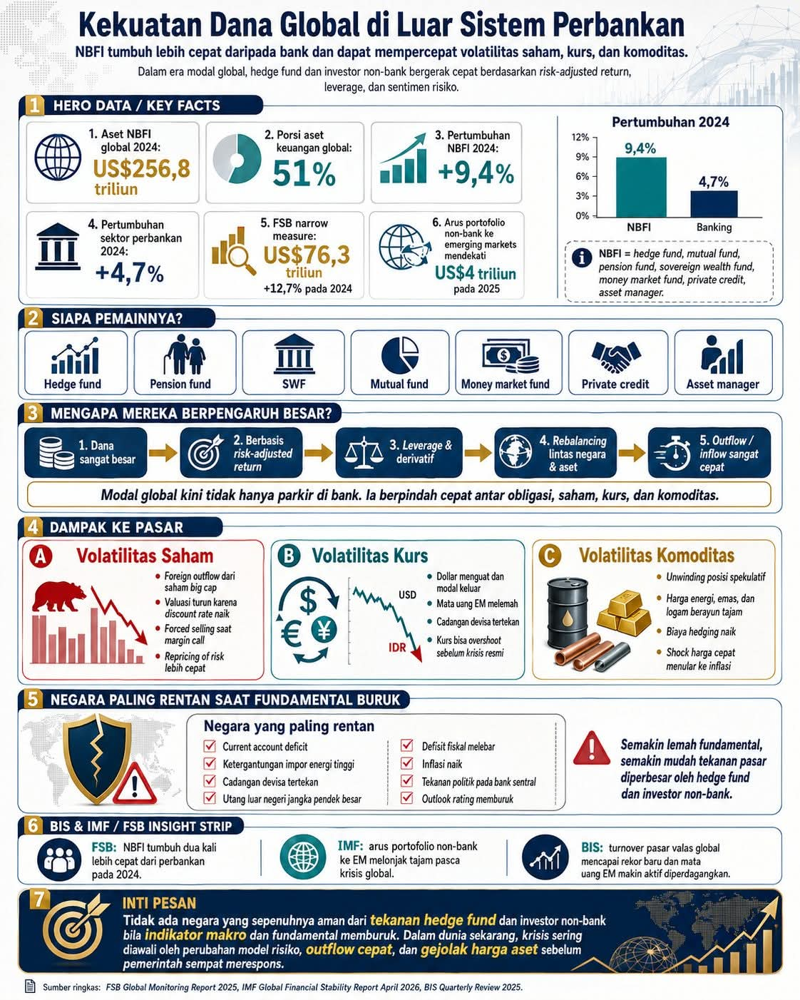

Guncangan Arus Tak Terlihat: Ketika Algoritma Modal Memilih Bandung
Hujan baru saja membasahi pelataran Dago bawah ketika Rehan menggeser laptopnya, memperlihatkan sebuah grafik interaktif yang penuh dengan fluktuasi garis berwarna neon. Di dalam ruang kerja komunal yang hangat di kawasan Bandung Utara itu, aroma kopi Arabika menyeruak lambat, berbaur dengan ketegangan sunyi yang membungkus empat orang manusia di dalamnya. Mereka adalah lulusan Teknik Industri institusi terkemuka di Bandung—empat kepala yang dididik untuk melihat dunia bukan sebagai kumpulan objek statis, melainkan sebagai sistem jaringan yang saling bertaut, berdenyut, dan kerap kali rapuh.
Alyssa, yang duduk bersandar sembari memutar-mutar pena, menatap tajam ke arah layar. Sebagai seorang spesialis optimasi sistem yang kini mendalami pemodelan risiko kuantitatif, matanya langsung menangkap sesuatu yang tidak biasa pada data tersebut. Di sebelahnya, Gibran sibuk dengan kalkulator matriks di tabletnya, sementara Dian, sang arsitek rantai pasok global kelompok mereka, mencatat poin-poin penting pada buku bersampul kulit hitam.
Lihat ini, kata Rehan memecah keheningan, suaranya berat namun penuh penekanan. Kita selalu berpikir bahwa bank sentral atau institusi perbankan konvensional adalah pemegang kendali utama likuiditas global. Namun, perhatikan lompatan ini. Sektor Lembaga Keuangan Non-Bank atau Non-Bank Financial Institutions (NBFI) telah melesat jauh melampaui imajinasi kita. Aset mereka di tahun 2024 saja sudah menyentuh angka luar biasa: US$ 256,8 triliun. Itu setara dengan lima puluh satu persen dari total aset keuangan di seluruh bumi.
Gibran mengangguk pelan tanpa mengalihkan pandangan dari hitungannya. Angka itu bukan sekadar statistik kosmetik, Rehan. Jika kita hitung laju pertumbuhannya, NBFI tumbuh sebesar sembilan koma empat persen pada tahun 2024, bandingkan dengan sektor perbankan tradisional yang hanya tumbuh empat koma tujuh persen. Secara matematis, akselerasi ini menunjukkan adanya perpindahan struktural dalam cara modal dunia dikelola dan dialokasikan.
Bab 1: Anatomi Para Pemain Bayangan
Dian memajukan posisi duduknya, menumpukan kedua siku di atas meja kayu solid. Kita harus memetakan siapa saja mereka secara struktural. Dari kacamata teknik sistem, kita tidak bisa menyelesaikan masalah tanpa mendefinisikan entitasnya. NBFI ini bukan entitas tunggal. Di sana ada hedge fund, mutual fund, pension fund, sovereign wealth fund (SWF), money market fund, private credit, hingga asset manager raksasa.
Alyssa tersenyum tipis, sebuah senyuman yang menyiratkan kecemasan intelektual. Dan jangan lupa sifat dasar mereka, Dian. Berbeda dengan perbankan konvensional yang diikat oleh regulasi ketat seperti Basel III dan pengawasan ketat permodalan, para pemain non-bank ini bergerak di bawah radar yang jauh lebih longgar. Mereka didorong oleh tiga mesin utama: pendekatan hasil berbasis risiko (risk-adjusted return), pemanfaatan leverage yang agresif, dan sentimen risiko yang sangat volatil.
Untuk menjelaskan konsep risk-adjusted return secara matematis kepada rekan-rekannya, Alyssa menarik papan tulis kecil di sudut ruangan dan menuliskan persamaan dasar Rasio Sharpe yang telah dimodifikasi untuk portofolio multi-aset:
Ketika hedge fund mengoptimalkan rasio ini, lanjut Alyssa sembari mengetuk papan tulis dengan spidolnya, mereka tidak hanya melihat keuntungan absolut. Mereka memaksimumkan pembilang sekaligus meminimalkan penyebut melalui instrumen derivatif yang kompleks. Ketika volatilitas pasar global bergeser sedikit saja, algoritma mereka mendeteksi perubahan seketika pada nilai $\sigma_p$. Efeknya? Mereka melakukan rebalancing portofolio lintas negara dalam hitungan milidetik. Likuiditas bernilai miliaran dolar bisa menguap dari pasar domestik kita hanya karena perubahan angka di balik layar komputer di New York atau London.
Gibran menambahkan analisisnya mengenai leverage. Masalah terbesar muncul ketika kita memasukkan faktor pengali modal atau leverage ratio ($L$). Jika modal awal mereka adalah $K$ dan mereka meminjam dana hingga total aset menjadi $A$, maka tingkat leverage didefinisikan sebagai:
Dengan instrumen derivatif modern, nilai $L$ ini bisa mencapai angka yang sangat ekstrem. Ketika keuntungan bergerak searah dengan prediksi mereka, imbal hasil mereka akan berlipat ganda secara eksponensial. Namun, ketika pasar berbalik arah sedikit saja, potensi kerugian yang terjadi juga mengikuti fungsi linier yang diperkuat oleh faktor $L$ tersebut. Hal inilah yang memaksa mereka melakukan forced selling atau penjualan paksa saat margin call terpenuhi. Kejadian seperti ini langsung memicu guncangan hebat di pasar saham lokal, terutama pada saham-saham berkapitalisasi besar atau big cap.

Bab 2: Transmisi Guncangan Lintas Pasar
Sore kian larut di Kota Bandung, suara azan Magrib lamat-lamat terdengar dari kejauhan, bersahutan di tengah rintik hujan yang belum juga reda. Keempat sekawan itu memesan beberapa porsi cuanki hangat untuk menjaga energi pikiran mereka tetap terjaga. Diskusi kini beralih pada babak yang lebih krusial: bagaimana transmisi modal global ini menghantam sektor riil dan pasar keuangan domestik.
Dian membuka catatan analisis rantai pasok finansialnya. Berdasarkan data Financial Stability Board (FSB) narrow measure, ukuran sempit dari aktivitas berisiko tinggi ini saja sudah mencapai US$ 76,3 triliun, tumbuh dua belas koma tujuh persen pada tahun 2024. Kita bisa melihat dampaknya melalui tiga saluran utama volatilitas: saham, kurs, dan komoditas.
Mari kita bedah satu per satu, usul Rehan. Pertama, Volatilitas Saham. Kita sudah sering melihat fenomena foreign outflow dari saham-saham big cap di Bursa Efek Indonesia. Mengapa ini terjadi begitu sistematis? Karena ketika suku bunga diskonto global naik, valuasi aset di negara berkembang otomatis terkoreksi ke bawah melalui penyesuaian nilai sekarang (present value) dari arus kas masa depan.
Gibran menuliskan formulasi diskonto tersebut di tabletnya untuk memperjelas argumentasi Rehan:
Saat premi risiko $\Delta r$ melonjak akibat sentimen global, nilai sekarang ($PV$) dari korporasi domestik jatuh merosot, jelas Gibran. Alhasil, manajer investasi asing segera melakukan repricing of risk secara massal. Penjualan besar-besaran ini memicu kepanikan, menurunkan harga saham, dan memicu aksi jual paksa (forced selling) pada akun-akun margin lokal. Efek dominonya sangat merusak sistem keuangan internal.
Alyssa kemudian mengambil alih pembicaraan untuk membahas Volatilitas Kurs. Ini yang paling berbahaya bagi stabilitas makro kita, kawan-kawan. Ketika arus portofolio non-bank ke pasar negara berkembang (emerging markets) mendekati proyeksi ekstrem—seperti angka US$ 4 triliun pada tahun 2025—balikannya bisa sama dahsyatnya. Begitu dolar Amerika Serikat menguat karena kebijakan pengetatan moneter di sana, modal asing langsung keluar (outflow) secara masif.
Dampaknya pada mata uang lokal seperti Rupiah sangat instan, lanjut Alyssa dengan nada cemas. Mata uang kita melemah tajam, memaksa Bank Indonesia menguras cadangan devisa untuk melakukan intervensi di pasar spot maupun domestik non-deliverable forward (DNDF). Jika fundamental ekonomi kita sedang rapuh, nilai tukar atau kurs bisa mengalami overshoot, melesat jauh melampaui nilai fundamentalnya sebelum akhirnya memicu krisis resmi yang melumpuhkan sektor korporasi dengan utang valas tinggi.
Dian melengkapi bagian ketiga dari triumvirat dampak tersebut: Volatilitas Komoditas. Kita di Indonesia sering merasa aman karena kita adalah produsen komoditas utama seperti batu bara dan minyak kelapa sawit. Namun, jangan lupa bahwa harga komoditas global kini sangat ditentukan oleh unwinding posisi spekulatif dari hedge fund besar di bursa berjangka. Ketika mereka melikuidasi posisi buy mereka untuk menutup kerugian di pasar lain, harga energi, emas, dan logam dasar bisa berayun tajam ke bawah dalam hitungan hari. Biaya hedging atau lindung nilai bagi eksportir kita melonjak drastis, dan shock harga ini dengan sangat cepat menular ke inflasi domestik melalui jalur imported inflation.
Bab 3: Matriks Kerapuhan Fundamental
Lampu-lampu jalan di kawasan Dago mulai menyala, memantulkan cahaya keemasan di atas aspal yang basah. Di dalam ruangan, suasana semakin intens. Rehan memproyeksikan sebuah matriks checklist pada layar utama. Ini adalah bagian kelima dari framework analisis kita: Negara Paling Rentan Saat Fundamental Buruk.
Kita tahu, kata Rehan sembari menunjuk layar, bahwa semakin lemah fundamental suatu negara, semakin mudah tekanan pasar diperbesar oleh hedge fund dan investor non-bank. Mari kita bedah indikator makro apa saja yang menjadi mangsa empuk bagi algoritma short-selling mereka.
Dian mencatat delapan indikator utama yang saling mengunci dalam sebuah sistem lingkaran setan finansial. Pertama, defisit transaksi berjalan atau current account deficit. Kedua, ketergantungan impor energi yang tinggi. Ketiga, cadangan devisa yang tertekan. Keempat, utang luar negeri jangka pendek yang bernilai besar.
Lalu yang kelima, Gibran menimpali, defisit fiskal yang terus melebar melampaui batas aman tiga persen dari PDB. Keenam, inflasi yang merangkak naik tak terkendali. Ketujuh, adanya tekanan politik yang mengintervensi independensi bank sentral. Dan terakhir, kedelapan, outlook rating utang negara yang memburuk dari lembaga pemeringkat internasional seperti Moody's atau S&P.
Secara matematis, kita bisa menggambarkan fungsi kerentanan ekonomi ($V$) suatu negara sebagai kombinasi linier terbobot dari variabel-variabel makro tersebut, jelas Gibran sembari merumuskan sebuah model sederhana pada papan tulis:
Ketika nilai $V$ ini melampaui ambang batas kritis tertentu, algoritma automated trading milik asset manager global akan mendeteksi sinyal jual otomatis (sell-signal), potong Alyssa cepat. Mereka tidak akan menunggu menteri keuangan kita berpidato atau membuat kebijakan baru. Mereka langsung mengeksekusi perintah pelepasan aset. Inilah mengapa modal global bergerak sangat kejam dan tanpa kompromi.
Bab 4: Pandangan Lembaga Multilateral
Dian kemudian membuka rujukan terbaru yang ia unduh dari rilis resmi lembaga keuangan internasional. Kita tidak sendirian dalam kecemasan ini. Jika kita membaca laporan dari Financial Stability Board, International Monetary Fund, dan Bank for International Settlements, mereka semua mengeluarkan peringatan yang senada.
FSB dalam Global Monitoring Report terbarunya dengan tegas menyatakan bahwa NBFI kini tumbuh dua kali lebih cepat daripada sektor perbankan tradisional sepanjang tahun 2024, ujar Dian sembari membaca dokumen digital di layarnya. Sementara itu, IMF dalam Global Financial Stability Report menyoroti bahwa arus portofolio non-bank ke emerging markets cenderung melonjak sangat tajam pasca-krisis global, namun juga memiliki pola pembalikan arah yang sama drastisnya.
Rehan mengangguk, menyetujui pernyataan Dian. Dan dari sudut pandang moneter, BIS Quarterly Review mencatat bahwa turnover pasar valuta asing (valas) global kini telah mencapai rekor baru yang belum pernah terjadi sebelumnya. Mata uang negara berkembang menjadi jauh lebih aktif diperdagangkan di pasar offshore melalui instrumen derivatif, yang berarti kontrol bank sentral domestik terhadap nilai tukar mata uangnya sendiri semakin tererosi dari hari ke hari.
Ini seperti mengemudikan kapal pesiar besar di tengah badai samudra tanpa memiliki kendali penuh atas kemudinya, renung Gibran pelan. Kita mengira kita memegang kendali ekonomi makro dengan menaikkan atau menurunkan suku bunga acuan domestik, padahal kita sebenarnya hanya menyesuaikan layar kecil kita di hadapan angin topan modal global yang digerakkan oleh para manajer investasi non-bank tersebut.
Bab 5: Inti Pesan dan Konklusi Strategis
Malam telah sepenuhnya turun menyelimuti Kota Bandung ketika keempat alumni Teknik Industri itu mulai merangkum seluruh hasil diskusi panjang mereka. Lembaran-lembaran kertas penuh coretan rumus, grafik yang berpendar di layar laptop, dan cangkir-cangkir kopi yang telah kosong menjadi saksi dari pergulatan pemikiran mereka yang mendalam.
Rehan berdiri, memandang ke luar jendela kaca besar yang memperlihatkan kerlip lampu kota di kejauhan. Jadi, apa kesimpulan utama kita untuk analisis nseReview kali ini? tanya Rehan retoris.
Alyssa menjawab dengan tegas, matanya mencerminkan keyakinan intelektual yang matang. Inti pesannya sangat jelas, Rehan. Tidak ada satu pun negara di dunia ini yang sepenuhnya aman dari tekanan hedge fund dan investor non-bank bila indikator makro serta fundamental ekonominya memburuk. Dalam realitas dunia modern saat ini, krisis ekonomi tidak lagi berjalan lambat seperti pola konvensional masa lalu. Krisis sering kali diawali secara mendadak oleh perubahan model risiko pada algoritma mereka, yang kemudian memicu outflow modal secara sangat cepat, dan disusul oleh gejolak harga aset yang hebat sebelum pemerintah serta otoritas moneter setempat sempat merumuskan respons kebijakan mereka.
Kita sebagai orang teknik, tambah Dian, harus melihat ini sebagai masalah keandalan sistem (system reliability). Kita tidak bisa hanya memperbaiki satu komponen kecil saja seperti mengendalikan inflasi, sementara membiarkan utang luar negeri jangka pendek membengkak atau membiarkan transaksi berjalan terus-menerus defisit. Seluruh elemen makro harus dijaga dalam kondisi optimal agar sistem ekonomi kita memiliki resiliensi yang tinggi terhadap guncangan eksternal.
Gibran tersenyum sembari menutup tabletnya. Dan yang paling penting, kita harus menyadari bahwa modal global kini tidak lagi sekadar parkir dengan manis di dalam brankas bank perbankan konvensional. Modal tersebut senantiasa bergerak cepat, bermigrasi dalam hitungan detik antar-obligasi, saham, kurs mata uang, hingga kontrak berjangka komoditas di seluruh penjuru dunia. Memahami pergerakan mereka adalah kunci utama untuk mempertahankan kedaulatan ekonomi kita di masa depan.
Hujan di luar akhirnya mereda, leaving udara dingin khas Bandung yang menyegarkan. Keempat pemikir muda itu mengemas barang-barang mereka, siap membawa hasil analisis mendalam ini ke dalam dunia nyata, menyebarkan pemikiran kritis mereka demi masa depan ekonomi yang lebih tangguh dan terjaga.